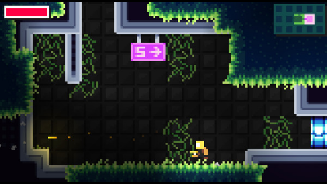
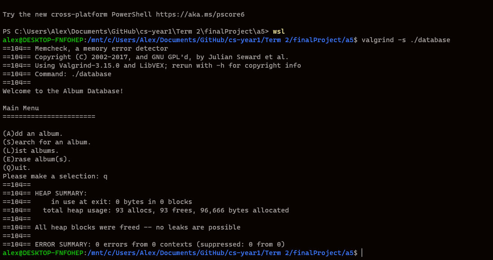

projects
PSYCRON
(Steam Page, there's a free demo)
- TL;DR
- A lo-fi metroidvania released in August of 2021 developed by me (Code & Art) and Henry Hoffman (Sound, Music)
- Published on Steam, worked with Steamworks and Steam Pipe
- I was the programmer & designer, developed in GMS2 using GML
- Utilized Git and Github for version control, Trello for task and bug tracking
- Organized QA and testing through Discord, managed & recieved public feedback through Discord and Steam's support forms
- In more detail:
-
A Grade 12 capstone project which got way out of hand. I was responsible for designing and programming the game, along with getting it onto Steam using Valve's Steamworks platform. Since I was the sole programmer I also organized testing/QA.
PSYCRON was developed in GMS2 and scripted/written in GML.
I created several tools for the game, including a custom audio mixer to make mastering easier which was useable in-game, updated in real time and saved mixing data to a .json file and a python program to autogenerate text similar to the logo from a custom spritefont.
Git and Github were invalueable during the project, as they allowed me to create easy backups & a seperate branch for a demo version of the game, so any demo specific changes could be kept separate from master.
-
Media

This Website
- TL;DR
- The website you're currently looking at!
- Pure HTML/CSS
- Hosted through GitHub pages
- Designed by me, preplanned in photoshop
- In more detail:
-
In early September after some rough doodles in Photoshop, I sat down and finally decided to properly set a portfolio up. I find it especially handy since I've done a lot of game related projects which benefit from the more visual nature
and lack of space restrictions. Plus, great practice with HTML and CSS!
Skeletied
(Itch.io page, playable in browser)
- TL;DR
- Entry with the SFU Game Developers club for the GMTK 2021 "Tied Together" gamejam
- Puzzle game about using a skeleton's two halves joined by his stretchy spine to solve puzzles
- Coded the menu system and some of the animations in Godot with GDScript
- Designed and drew the main character and logo, composed some of the music (Title Screen, Ending)
- In more detail:
-
The SFU Game Developer club's entry to the GMTK 2021 gamejam made very quickly over two days. I had had the idea for a person who was split in half that could manipulate or carry objects to solve puzzles using their spine.
Gabe (the club's president) rightfully pointed out that it was a bit morbid so we made Skeletony instead.
I drew the skeleton and logo, came up with a few puzzle concepts(see image 2!), and was responsible for putting together a level select (which never ended up getting used, it was a gamejam surprise surprise) that got repurposed into the main menu. Would have liked to have done more but was feeling pretty burned from trying to wrap up PSYCRON development. -
Media
Vinyl Record Database
- TL;DR
- System for storing records on... vinyl records
- Console application, written in C++ 17 and split across multiple .cpp/.h files for faster compilation and readability
- Used a custom class to store each record, loaded in record information from an external file and able to sort by Artist Name/Length/etc.
- Program tested heavily with valgrind to catch any memory leaks
- Developed on a Linux VM (WSL) to speed up development compared to using a normal virtualbox install
- In more detail:
-
My final project for CMPT 135 (Introduction to Programming II) where I was tasked to create some sort of a database system. I like vinyl records so I decided to make those the data.
This is one of the larger C++ programs I've worked on, being split across multiple files to both speed up recompilation and to keep everything readable. Read in records externally from a text file, desgined a custom class to store information about records, and used STL's sorting algorithms to order data by fields (Artist Name, Length, Year, etc...).
-
Media

Misc. Gamejam Games
(Download Last Minute,
Brothers,
Time Lapse)
- TL;DR
- Made: Last Minute, Brothers, Time Lapse
- Several short games, each made in 24 hours for the GM48 gamejam
- All developed with remote teams of 2-3 people, more if testers are included
- Responsible for programming, design, organizing QA
- In more detail:
-
From 2016 to 2019 (shortly before PSYCRON started development) I participated in several 48 hour gamejams with a team of friends.
It was a good experience in working under tight deadlines and coordinating assets/designs/timelines between artists who weren't in the same space and who occasionally had other responsiblities.
From a technical/design standpoint, Last Minute is probably the most complex with the idea being playing through a level multiple times and having to avoid the ghosts of your previous runs. I had to set up a custom system for storing the player's position and animation state that'd be recorded to and then quickly read back since at the time, GameMaker didn't have any concept of structs.
Brothers (use your brother as a projectile or to jump to higher places) holds a special place in my heart as it was probably the one I had the most fun working on. Me and Henry (who composed the music for it, also worked with me on PSYCRON) brought it into school where a lot of our classmates started competing to see who could finish it the fastest.
-
Media